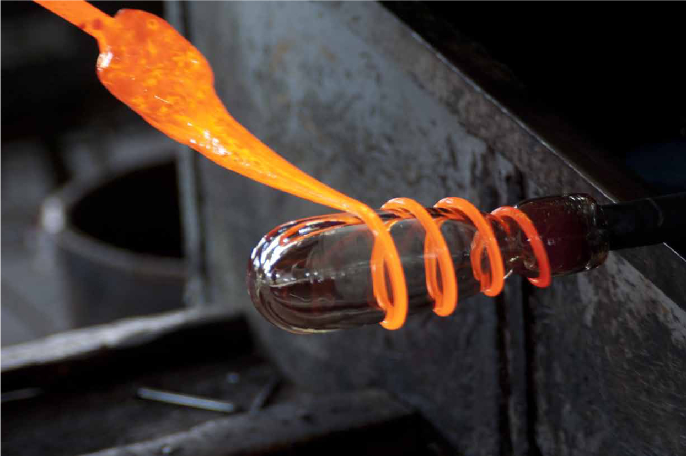

Se denomina vidrio soplado a la técnica de fabricación de objetos de vidrio mediante la creación de burbujas en el vidrio fundido.
Estas burbujas se obtienen inyectando aire dentro de una pieza de material a través de un largo tubo metálico por medio de una máquina
o bien de forma artesanal soplando por el otro extremo.
Es un sistema parecido al que se utiliza para hacer las burbujas de jabón.

six flags
Bosque maguico
Selva maguica